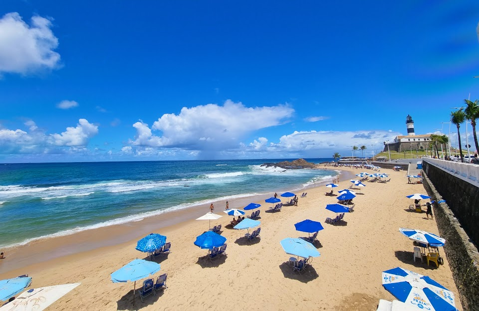
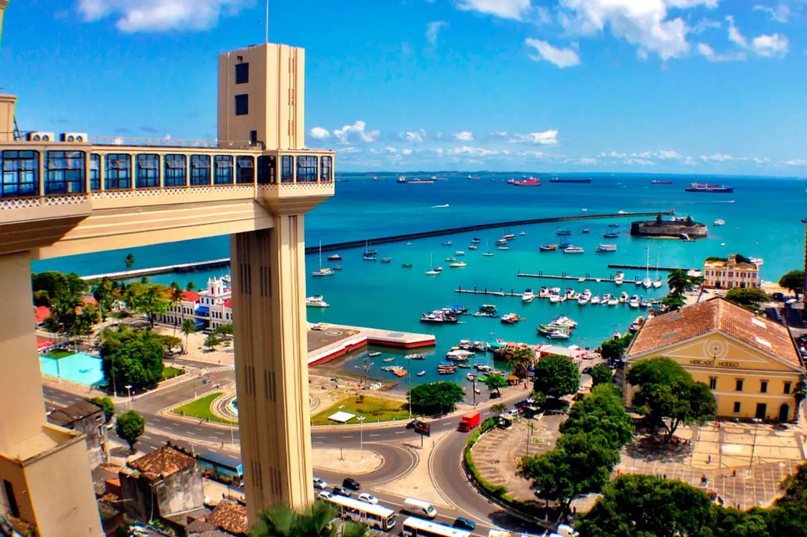
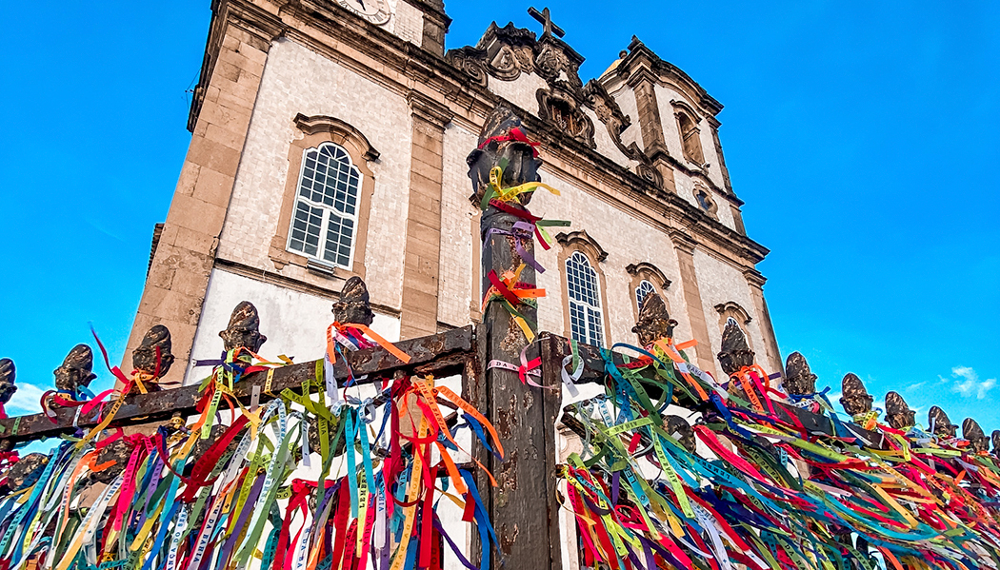
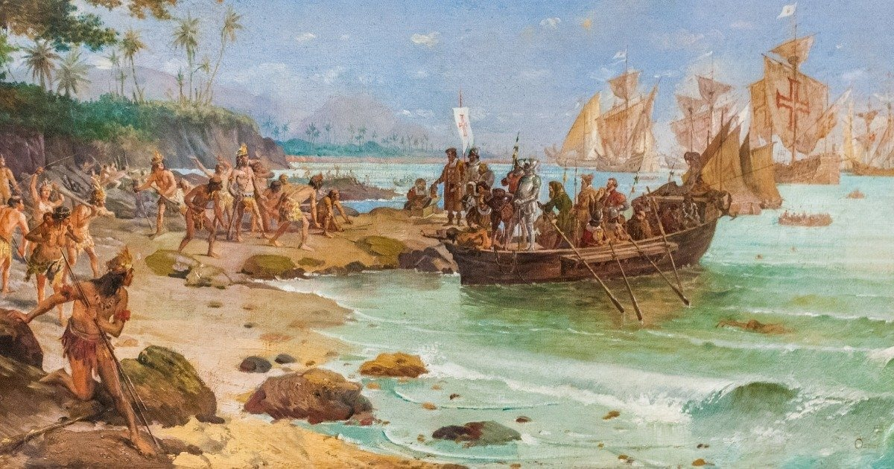
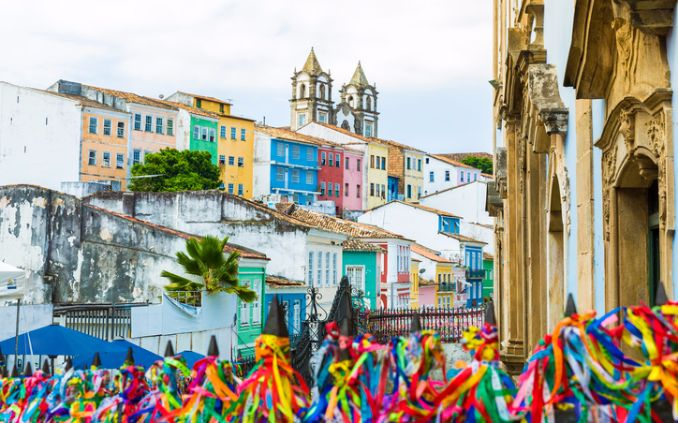
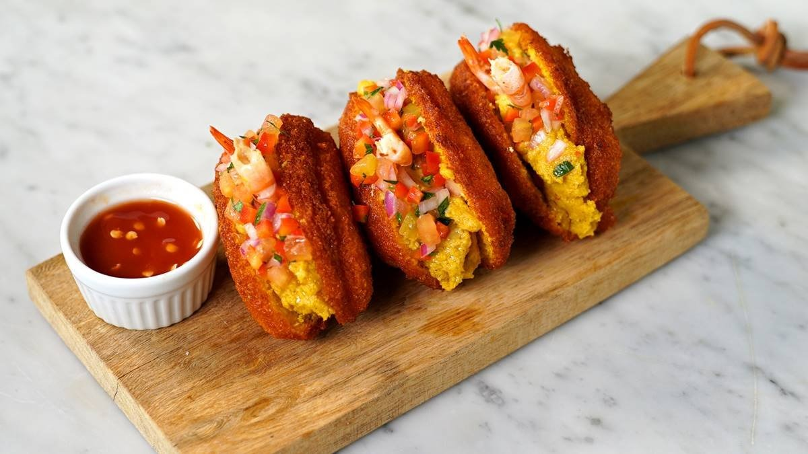
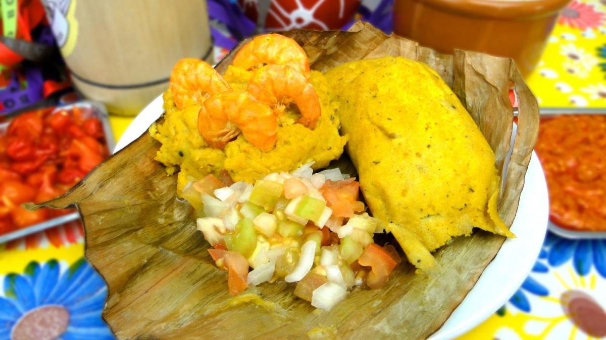

Nesse site vamos falar um pouco sobre os encantos da Bahia, um lugar onde a cultura, a história e a gastronomia se entrelaçam em uma experiência única. Prepare-se para embarcar em uma jornada fascinante pelos sabores, aromas e cores desse estado tão rico em tradições.
Conheça um pouco da cultura bahiana

Pontos Turisticos
O Elevador Lacerda, localizado em Salvador, Bahia, é um ícone arquitetônico e turístico. Inaugurado em 1873, foi um dos primeiros elevadores urbanos do mundo. Com uma altura de 72 metros, conecta a Cidade Baixa à Cidade Alta, proporcionando uma vista deslumbrante da Baía de Todos os Santos. Seu nome homenageia o engenheiro Antônio de Lacerda, responsável por sua construção. O Elevador Lacerda se tornou um símbolo da cidade, atraindo visitantes de todo o mundo e sendo um importante meio de transporte para os moradores locais.

O Bonfim Bonfim é uma das mais icônicas e reverenciadas igrejas da Bahia, localizada em Salvador. Sua história remonta ao século XVIII, quando foi construída. É um importante centro de peregrinação para fiéis católicos, especialmente durante a tradicional Lavagem do Bonfim, uma festa que combina elementos da cultura afro-brasileira com a religião católica. O templo é famoso por sua fachada em estilo neoclássico e pela simbólica fita do Senhor do Bonfim, que os devotos amarram nos portões da igreja como forma de fazer pedidos e agradecimentos. É um lugar de grande significado cultural e espiritual para os baianos e um ponto turístico imperdível para quem visita Salvador.

História da Bahia
Na aurora do século XVI, as águas calmas da Bahia testemunharam o desembarque dos navegadores lusitanos, ávidos por explorar novas terras. Sob o comando de Pedro Álvares Cabral , as velas ao vento anunciavam a chegada de um novo capítulo na história da região. As caravelas, como gigantes de madeira, se aproximavam timidamente das praias douradas, onde os olhos curiosos dos nativos aguardavam com misto de temor e curiosidade.
A chegada dos portugueses na Bahia trouxe consigo um choque de culturas e a introdução de um novo mundo aos povos nativos.

Enquanto as ondas acariciavam suavemente a costa, os portugueses desembarcavam com olhares curiosos e expectativas elevadas. O solo quente sob seus pés parecia sussurrar segredos de terras desconhecidas e promessas de fortuna. Assim, com passos cautelosos, eles adentravam as florestas exuberantes, desvendando os mistérios e desafios daquele novo mundo.
À medida que o sol se punha no horizonte, os primeiros laços entre os colonizadores e os habitantes originais da Bahia começavam a se formar, permeados pela troca de saberes e pelo desejo mútuo de compreensão.

Gastronomia
O acarajé baiano é uma iguaria tradicional da culinária afro-brasileira, especialmente popular na região nordeste do Brasil, em especial na Bahia. Feito com massa de feijão-fradinho, cebola e temperos, frito em azeite de dendê, é servido com vatapá, caruru, camarão seco e pimenta. Sua origem remonta às tradições culinárias trazidas pelos africanos escravizados. O acarajé não é apenas uma comida, mas uma expressão cultural e religiosa, muitas vezes associada às festas religiosas afro-brasileiras, como o candomblé. É uma verdadeira explosão de sabores e aromas que encanta tanto locais quanto turistas.

O abará é um prato típico da culinária baiana, especialmente popular na região de Salvador. Feito a partir de uma massa de feijão-fradinho moído e temperado, envolto em folha de bananeira e cozido a vapor, o abará é uma deliciosa iguaria de origem africana. Sua textura é densa e macia, com um sabor único e levemente picante, resultado da combinação de temperos como cebola, pimentão, azeite de dendê e coentro. É comum encontrar o abará sendo vendido em barracas de rua, especialmente durante festas e eventos culturais na Bahia.
